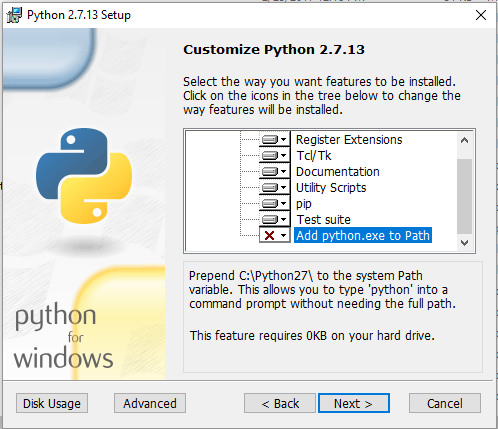
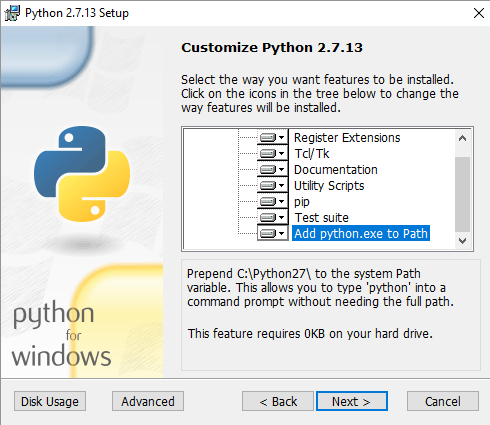

Cartoview¶
Installation Requirements¶
-
Install Python2.7
-
Install 1.8.7 <= Django <1.9a0
Docker users
- you need to install docker-compose
Install On Ubuntu linux¶
-
Follow these setps if you don't have Geonode installed on your ubuntu system.
-
These instructions will install Geonode and Cartoview.
Note
Verify your installation is completed by adding any layer in Geonode
-
Don't Forget Installation requirements
-
Install Geonode=2.5.15
-
Install CartoView Libraries
pip install cartoview -
Install CartoView_Django Project
django-admin.py startproject --template=https://github.com/cartologic/cartoview-project-template/archive/master.zip --name django.env,uwsgi.ini,.bowerrc <your_project_name> -
Go to your Project Folder
cd <your_project_name> -
Detect changes in
app_managerApppython manage.py makemigrations app_manager -
create people Table
python manage.py migrate people -
Create Rest of tables :
python manage.py migrate -
load default User
python manage.py loaddata sample_admin.json -
load default oauth app
python manage.py loaddata json/default_oauth_apps.json -
Test Server (Development)
-
To start Development Server run this Command :
python manage.py runserver 0.0.0.0:8000
-
Info
(Optional) if want to override any settings variable rename local_settings.py.sample to local_settings.py then override settings you want inside local_settings.py
Warning
Don't Forget to Change <your_project_name> to desired name.
Apps From Geo App Market
-
to Install apps from Geo App Market
-
Load Default Store
python manage.py loaddata app_stores.json -
Install nodejs and then install bower we need them to install app_manager dependencies
- in this step we will install required files in your project folder type :
bower install - Collect Required files type:
python manage.py collectstatic --noinput - Now you Can Install Apps from Geo App Market
- Go to
appstab and clickmanage appsButton and install app you want
Install On Windows¶
- Install Python2.7
- Make Sure to add the Python in the Path, as this is not setup by default
- check add python.exe to PATH  
-
Install Django 1.8.7 open cmd and type:
pip install django==1.8.7
We recommend to use Docker
- Follow Docker Instructions
Existing GeoNode Users¶
Check GeoNode and Cartoview version compatibility in PYPI then install Cartoview
-
Requirements:
- GeoNode == 2.5.15
Attention
We will Support more version of Geonode Soon!!
-
install cartoview libraries
pip install cartoview == <version> -
Create Cartoview Project
django-admin.py startproject --template=https://github.com/cartologic/cartoview-project-template/archive/master.zip --name django.env,uwsgi.ini,.bowerrc <your_project_name> -
Go to your Project Folder
cd <your_project_name> -
detect Changes in app_manager
python manage.py makemigrations app_manager -
create People table
python manage.py migrate peopleBug
this command will fire an error ignore it
-
create rest of database tables
python manage.py migrate -
Collect static Files
python manage.py collectstatic --noinput -
Now Development Server :
python manage.py runserver 0.0.0.0:8000
Deployment notes¶
-
Important
in Production Configure Geoserver before uploading layers from here -
Important
Once CartoView is installed is expected to install all apps from the app store automatically At the moment CartoView will fully support apache server only For nginx deployments, CartoView will be able to detect new apps and get the updates, how ever to apply the updates, web server restart will be required to complete the process CartoView will not be able to restart nginx when new apps are installed. After you install or update apps from the app manager page you will need to restart nginx manually until this issue is addressed in the future
- follow these steps to get apps working on nginx
- collect static files using this commands
python manage.py collectstatic --noinput - restart server now you should restart server after installing any app
- collect static files using this commands
- follow these steps to get apps working on nginx